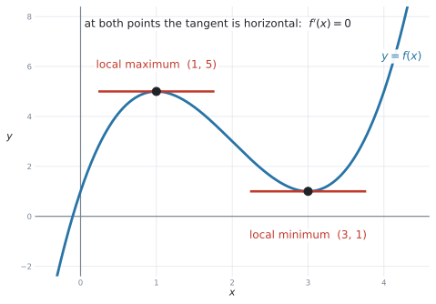
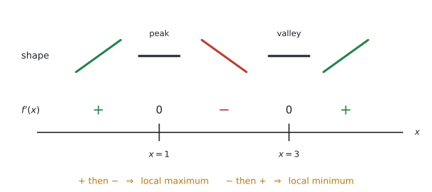
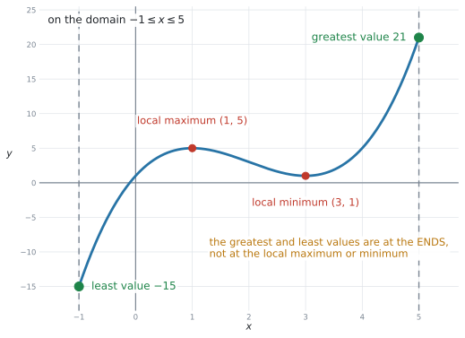
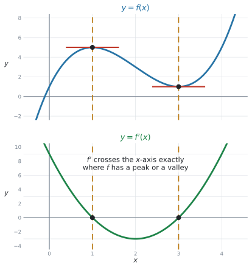
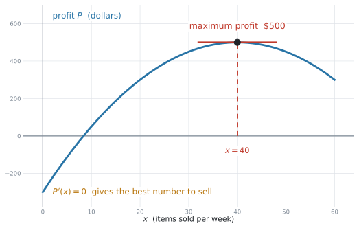

SL 5.6 — Local maxima and minima（導関数がゼロになる点 — 極大・極小）
- \(f'(x) = 0\) を解いて、傾きが \(0\) になる \(x\) を求められる。
- その \(x\) が local maximum（極大）か local minimum（極小）かを、理由をつけて見分けられる。
- 答えを 座標（\(x\) と \(y\) の両方）で書ける。
- local な最大・最小が、その範囲の中で一番大きい／小さい値とはかぎらないことが分かる。
- 電卓で \(f'(x)\) のグラフを出し、\(f'(x) = 0\) の解を求められる（シラバスが名指ししています）。
- 利益・面積・体積・費用などの文脈で、結果を言葉で説明できる。
公式集の Topic 5 の欄は 5.3、5.5、5.8 だけです。5.6 の欄はありません。
覚えることも、実は1行だけです。
\[ \text{peak or valley} \ \Longleftrightarrow \ f'(x) = 0 \tag{1}\]
シラバスの Content 欄も、この1行を書いているだけです。
Values of \(x\) where the gradient of a curve is zero. Solution of \(f'(x) = 0\). Local maximum and minimum points.
The idea
1. maximum や minimum では、tangent（接線）が水平です
SL 5.2 で、\(f'(x) = 0\) が増加と減少の区切りだと見ました。SL 5.4 では、そこで接線が水平になることを見ました。この場所を stationary point（停留点）と呼びます。
この項目は、その点に名前を付けて、座標で答える項目です。それらが local maximum point（極大点）や local minimum point（極小点）になります。

図 1 は \(f(x) = x^{3} - 6x^{2} + 9x + 1\) です。
\[ f'(x) = 3x^{2} - 12x + 9 = 3(x - 1)(x - 3) \]
\[ f'(x) = 0 \quad \Rightarrow \quad x = 1 \ \text{と} \ x = 3 \]
| 英語 | 日本語 | この例 |
|---|---|---|
| local maximum point | 極大点 | \((1,\ 5)\) |
| local minimum point | 極小点 | \((3,\ 1)\) |
| stationary point | 停留点 | 上の \(2\) つをまとめた言い方 |
日本の教科書では「極大値」「極小値」と習います。まったく同じものです。
ただし試験は英語なので、local maximum / local minimum のほうを覚えてください。 local を落とさないことが大事です（第4節）。
2. local maximum か local minimum かは、\(f'\) の符号で見分けます
\(f'(x) = 0\) を解いただけでは、どちらなのかは分かりません。 両方とも「傾き \(0\)」だからです。
見分け方は、その点の前後で \(f'\) の符号がどう変わるかです。

| 前後の \(f'\) | 形 | 名前 |
|---|---|---|
| \(+\) → \(0\) → \(-\) | 上がって、下がる | local maximum（山） |
| \(-\) → \(0\) → \(+\) | 下がって、上がる | local minimum（谷） |
やり方は、値を1つずつ入れるだけです。\(f'(x) = 3(x-1)(x-3)\) なら、
\[ f'(0) = 3(-1)(-3) = 9 > 0 \]
\[ f'(2) = 3(1)(-1) = -3 < 0 \]
\[ f'(4) = 3(3)(1) = 9 > 0 \]
\(x = 1\) の前後は \(+\) → \(-\) なので local maximum、\(x = 3\) の前後は \(-\) → \(+\) なので local minimum です。
AI では両方の試験で電卓が使えます。 グラフをかいて、どちらなのかを目で見るのが一番速いです。
ただし、giving a reason（理由を付けて）と書かれていたら、理由の一文が要ります。
The gradient changes from positive to negative, so it is a local maximum.
グラフを見た、では理由になりません。
AA（Analysis and Approaches）では \(f''(x)\) の符号で見分けます。AI SL のシラバスには \(f''\) が入っていません。
符号の変化か、グラフで判断してください。
3. 答えは「座標」で書きます
シラバスの言葉は Local maximum and minimum points です。points（点）なので、\(x\) と \(y\) の両方が要ります。
\[ (1,\ 5) \quad ✓ \qquad\qquad x = 1 \quad ✗ \]
\(y\) 座標は、もとの式に代入して出します。
\[ f(1) = 1 - 6 + 9 + 1 = 5 \]
| 項目 | 聞かれること | 答え |
|---|---|---|
| SL 5.2 | 増加・減少する区間 | \(x\) の範囲だけ（\(0 < x < 4\)） |
| SL 5.6 | 極大・極小の点 | 座標（\((1,\ 5)\)） |
同じ \(f'(x) = 0\) から出発しても、聞かれ方が違います。 問題文が interval なのか coordinates なのか、必ず確かめてください。
Find the local maximum value… \(y\) の値だけ（\(5\)）Find the coordinates of the local maximum point… 座標（\((1,\ 5)\)）
value なら数、point なら座標です。SL 2.4 でも同じ区別がありました。
4. local は、いちばん大きい／小さいとはかぎりません
シラバスが名指しで注意しているところです。
Awareness that the local maximum/minimum will not necessarily be the greatest/least value of the function in the given domain.

図 3 は、同じ \(f(x) = x^{3} - 6x^{2} + 9x + 1\) を \(-1 \le x \le 5\) の範囲で見たものです。
| 値 | どこ | |
|---|---|---|
| local maximum | \(5\) | \(x = 1\) |
| local minimum | \(1\) | \(x = 3\) |
| greatest value | \(21\) | \(x = 5\)（範囲の右端） |
| least value | \(-15\) | \(x = -1\)（範囲の左端） |
local maximum の値（\(5\)）より、端のほう（\(21\)）が高いのです。local minimum も同じで、その値（\(1\)）より、端（\(-15\)）のほうが低い。
for 0 ≤ x ≤ 10 のように範囲が書かれている問題で、greatest value（最大値）や least value（最小値）を聞かれたら、
- \(f'(x) = 0\) の解での値
- 両端での値
を全部くらべて、一番大きい／小さいものを選びます。
local maximum と聞かれているなら端は関係ありませんが、greatest や maximum value in the domain なら端が答えになることがあります。
local という語が、合図です
- local maximum … そのあたりで一番高い点。\(f'(x) = 0\) で見つかる
- greatest value（または
globalmaximum）… 範囲全体で一番高い値。端も候補
英語で local が付いているかどうかを、指で押さえて確かめてください。
5. \(f'\) のグラフで見つける
シラバスの Guidance 欄は、電卓の使い方を名指ししています。
Students should be able to use technology to generate \(f'(x)\) given \(f(x)\), and find the solutions of \(f'(x) = 0\).

図 4 の上が \(f\)、下が \(f'\) です。\(f'\) が \(x\) 軸と交わる \(x\)（ここでは \(1\) と \(3\)）が、\(f\) の stationary point の位置です。
さらに、\(f'\) のグラフを見ればどちらなのかもすぐ分かります。
- \(f'\) が 上から下へ軸を横切る（\(+\) から \(-\)）→ \(f\) は local maximum
- \(f'\) が 下から上へ軸を横切る（\(-\) から \(+\)）→ \(f\) は local minimum
6. 手順のまとめ
- \(f'(x)\) を求める（SL 5.3）
- \(f'(x) = 0\) を解く → \(x\) の値
- もとの式に代入 → \(y\) 座標
- local maximum か local minimum かを決める（符号の変化、またはグラフ）
- 座標で答える。理由を求められていたら一文書く
範囲が指定されていて greatest / least を聞かれているなら、端の値も調べます（第4節）。
7. 文脈の問題
シラバスの Connections 欄は Other contexts: Profit, area, volume, cost と書いています。

図 5 は、1週間に \(x\) 個売ったときの利益 \(P(x) = -0.5x^{2} + 40x - 300\) です。
\[ P'(x) = -x + 40 = 0 \quad \Rightarrow \quad x = 40, \qquad P(40) = 500 \]
「\(40\) 個売ったときに、利益が最大の \(500\) ドルになる」 ── ここまで書いて、はじめて答えです。
- \(x = 40\) … 何個売るか（最大にする方法）
- \(y = 500\) … いくらもうかるか（最大の値）
How many items should be sold? なら \(40\)、Find the maximum profit なら \(500\) ドルです。
どちらを聞かれているかで、答えが変わります。 両方書いておけば安全、というわけではありません。
Why it works
なぜ「\(f'(x) = 0\) を探せば stationary point が見つかる」のかを説明します。
\(f'(x)\) はその点での接線の傾きでした（SL 5.1）。
山のてっぺんを考えてください。そこへ左から近づくとき、グラフは上がっています。つまり \(f'(x) > 0\)。右へ出ていくときは下がっています。つまり \(f'(x) < 0\)。
\[ f'(x) > 0 \ \longrightarrow \ ? \ \longrightarrow \ f'(x) < 0 \]
正の値から負の値へ、なめらかに移るのですから、途中で必ず \(0\) を通ります。 その場所が、てっぺんです。
local minimum のときは、\(-\) から \(+\) へ移るので、やはり途中で \(0\) を通ります。
だから、stationary point を探すことは、\(f'(x) = 0\) を解くことと同じなのです。
逆は必ずしも成り立ちません。\(f'(a) = 0\) でも、local maximum でも local minimum でもないことがあります（前後で符号が変わらない場合）。
AI SL では、そういう関数は出ません。 ただ、「\(f'(x)=0\) を解いたら、どちらなのかを確かめる」という手順を飛ばさないでください。符号を見るのは、そのためです。
Worked examples
問題文は英語です。意味が理解できなかったら、問題文の下の「日本語訳」を開いてください。解説は日本語です。
例題 1 The function \(f\) is given by \(f(x) = x^{3} - 6x^{2} + 9x + 1\).
(a) Find \(f'(x)\).
(b) Solve \(f'(x) = 0\).
(c) Find the coordinates of the local maximum point and the local minimum point, giving a reason for each.
日本語訳
関数 \(f\) が \(f(x) = x^{3} - 6x^{2} + 9x + 1\) で与えられています。
(a) \(f'(x)\) を求めなさい。
(b) \(f'(x) = 0\) を解きなさい。
(c) 極大点と極小点の座標を、それぞれ理由をつけて求めなさい。
(a)
\[ f'(x) = 3x^{2} - 12x + 9 \]
(b) 共通因数 \(3\) でくくってから因数分解します。
\[ 3x^{2} - 12x + 9 = 3\left(x^{2} - 4x + 3\right) = 3(x - 1)(x - 3) = 0 \]
\[ x = 1 \quad \text{と} \quad x = 3 \]
(c) \(y\) 座標を出します。
\[ f(1) = 1 - 6 + 9 + 1 = 5, \qquad f(3) = 27 - 54 + 27 + 1 = 1 \]
符号を調べます。 区間の中の値を1つずつ入れます。
\[ f'(0) = 9 > 0, \qquad f'(2) = -3 < 0, \qquad f'(4) = 9 > 0 \]
試験ではこう書く
\((1,\ 5)\) is a local maximum, because \(f'\) changes from positive to negative.
\((3,\ 1)\) is a local minimum, because \(f'\) changes from negative to positive.
区間は \(x < 1\)、\(1 < x < 3\)、\(x > 3\) の \(3\) つ。それぞれから1つずつ選びます。
\(0\)、\(2\)、\(4\) が計算しやすいです。\(0.5\) や \(2.7\) を選ぶ必要はありません。
(a) \(f'(x) = 3x^{2} - 12x + 9\)
(b) \(3(x-1)(x-3) = 0\), so \(x = 1\) and \(x = 3\)
(c) \(f(1) = 5\), \(f(3) = 1\)
\(f'(0) = 9 > 0\) and \(f'(2) = -3 < 0\), so \((1,\ 5)\) is a local maximum.
\(f'(2) = -3 < 0\) and \(f'(4) = 9 > 0\), so \((3,\ 1)\) is a local minimum.
例題 2 The function \(f\) is given by \(f(x) = x^{4} - 8x^{2} + 3\).
(a) Show that \(f'(x) = 4x(x - 2)(x + 2)\).
(b) Find the coordinates of the three stationary points.
(c) State which of them is a local maximum.
日本語訳
関数 \(f\) が \(f(x) = x^{4} - 8x^{2} + 3\) で与えられています。
(a) \(f'(x) = 4x(x - 2)(x + 2)\) となることを示しなさい。
(b) \(3\) つの停留点の座標を求めなさい。
(c) そのうちどれが極大点かを述べなさい。
(a) Show that なので、与えられた形を展開して（a）と合わせます。
\[ f'(x) = 4x^{3} - 16x \]
\[ 4x(x-2)(x+2) = 4x\left(x^{2} - 4\right) = 4x^{3} - 16x \quad ✓ \]
(b) \(f'(x) = 0\) より \(x = 0\)、\(x = 2\)、\(x = -2\)。
\[ f(0) = 3, \qquad f(2) = 16 - 32 + 3 = -13, \qquad f(-2) = 16 - 32 + 3 = -13 \]
\[ (-2,\ -13), \qquad (0,\ 3), \qquad (2,\ -13) \]
(c) 符号を調べます。
\[ f'(-3) = -60 < 0, \quad f'(-1) = 12 > 0, \quad f'(1) = -12 < 0, \quad f'(3) = 60 > 0 \]
試験ではこう書く
\((0,\ 3)\) is the local maximum, because \(f'\) changes from positive to negative there.
\[ - \quad\big|\quad + \quad\big|\quad - \quad\big|\quad + \]
\(x = -2\) で local minimum、\(x = 0\) で local maximum、\(x = 2\) で local minimum。local maximum と local minimum は、かならず交互に来ます。
これを知っていると、\(1\) つ調べれば残りが分かります。 ただし答案には、聞かれた点の理由を書いてください。
偶数だけの式（\(x^{4}\) と \(x^{2}\)）なので、グラフは \(y\) 軸について左右対称です。
\(y\) が同じ値になっても、間違いではありません。
(a) \(f'(x) = 4x^{3} - 16x\); \(4x(x-2)(x+2) = 4x(x^{2}-4) = 4x^{3} - 16x\) ✓
(b) \((-2,\ -13)\), \((0,\ 3)\) and \((2,\ -13)\)
(c) \((0,\ 3)\) is the local maximum, because \(f'\) changes from positive to negative.
例題 3 The function \(f\) is given by \(f(x) = x^{3} - 6x^{2} + 9x + 1\) for \(-1 \le x \le 5\).
(a) Write down the coordinates of the local maximum point and the local minimum point.
(b) Find the greatest value and the least value of \(f(x)\) on this domain.
(c) Explain why your answers to part (b) are not the same as your answers to part (a).
日本語訳
関数 \(f\) が、\(-1 \le x \le 5\) において \(f(x) = x^{3} - 6x^{2} + 9x + 1\) で与えられています。
(a) 極大点と極小点の座標を書きなさい。
(b) この定義域における \(f(x)\) の最大値と最小値を求めなさい。
(c) (b) の答えが (a) の答えと一致しない理由を説明しなさい。
(a) 例 1 と同じ関数です。
\[ (1,\ 5) \ \text{が極大点}, \qquad (3,\ 1) \ \text{が極小点} \]
(b) 端も調べます。
\[ f(-1) = -1 - 6 - 9 + 1 = -15, \qquad f(5) = 125 - 150 + 45 + 1 = 21 \]
\(4\) つの値 \(-15\)、\(5\)、\(1\)、\(21\) をくらべて、
\[ \text{greatest value} = 21, \qquad \text{least value} = -15 \]
(c) Explain why なので言葉で書きます。
試験ではこう書く
The local maximum and minimum are found where \(f'(x) = 0\), but the greatest and least values on a closed domain can also occur at the endpoints. Here \(f(5) = 21\) is larger than the local maximum value \(5\), and \(f(-1) = -15\) is smaller than the local minimum value \(1\).
\(f'(x) = 0\) の解が \(2\) つ、端が \(2\) つ。合わせて \(4\) つの候補があります。
\(1\) つでも飛ばすと、答えが変わってしまいます。表にして並べると確実です。
| \(x\) | \(-1\) | \(1\) | \(3\) | \(5\) |
|---|---|---|---|---|
| \(f(x)\) | \(-15\) | \(5\) | \(1\) | \(21\) |
(a) Local maximum \((1,\ 5)\); local minimum \((3,\ 1)\)
(b) \(f(-1) = -15\), \(f(5) = 21\)
Greatest value \(21\); least value \(-15\)
(c) The greatest and least values on a closed domain can occur at the endpoints, not only where \(f'(x) = 0\).
例題 4 A company sells \(x\) items per week. Its weekly profit, in dollars, is modelled by
\[ P(x) = -0.5x^{2} + 40x - 300, \qquad 0 \le x \le 60 . \]
(a) Find \(P'(x)\).
(b) Find the number of items that should be sold each week to make the greatest profit.
(c) Find this greatest profit.
(d) Interpret your answers in the context of the question.
日本語訳
ある会社は 1 週間に \(x\) 個の品物を売ります。1 週間の利益（ドル）は次の式でモデル化されます。
\[ P(x) = -0.5x^{2} + 40x - 300, \qquad 0 \le x \le 60 . \]
(a) \(P'(x)\) を求めなさい。
(b) 利益を最大にするために、1 週間に何個売ればよいかを求めなさい。
(c) その最大の利益を求めなさい。
(d) 答えを、問題の文脈で解釈しなさい。
(a)
\[ P'(x) = -x + 40 \]
(b) \(P'(x) = 0\) とおきます。
\[ -x + 40 = 0 \quad \Rightarrow \quad x = 40 \]
(c) \(x = 40\) をもとの式に入れます。
\[ P(40) = -0.5(1600) + 40(40) - 300 = -800 + 1600 - 300 = 500 \]
(d)
試験ではこう書く
The company should sell \(40\) items each week. This gives the greatest weekly profit, which is \(\$500\).
\(P\) は \(x^{2}\) の係数が負の \(2\) 次関数なので、local maximum が \(1\) つだけの形です。
端の値は \(P(0) = -300\)、\(P(60) = 300\)。どちらも \(500\) より小さいので、\(x = 40\) が範囲全体の最大です。
\(2\) 次関数のときは、この確認は暗算でできます。 \(3\) 次以上のときは、端の値をきちんと計算してください。
- (b) …
the number of items→ \(40\)（個数） - (c) …
this greatest profit→ \(500\)（ドル）
(b) に \(500\) と書くと \(0\) 点です。問題文が何の量を聞いているか、単位で確かめてください。
(a) \(P'(x) = -x + 40\)
(b) \(-x + 40 = 0\), so \(x = 40\) items
(c) \(P(40) = 500\), so the greatest profit is \(\$500\)
(d) Selling \(40\) items each week gives the greatest weekly profit, \(\$500\).
例題 5 The function \(f\) is given by \(f(x) = x^{3} - 4x^{2} - 3x + 10\).
(a) Use your graphic display calculator to find the coordinates of the local maximum point and the local minimum point, giving your answers correct to three significant figures.
(b) Verify your answer for the local minimum by solving \(f'(x) = 0\) algebraically.
日本語訳
関数 \(f\) が \(f(x) = x^{3} - 4x^{2} - 3x + 10\) で与えられています。
(a) 電卓を使って、極大点と極小点の座標を、有効数字 \(3\) 桁で求めなさい。
(b) \(f'(x) = 0\) を式で解いて、極小点の答えを確かめなさい。
(a) Graphs ページに \(f1(x)\) を入れて、Analyze Graph で最大点と最小点を出します（GDCの使い方）。
\[ (-0.333,\ 10.5) \ \text{が極大点}, \qquad (3,\ -8) \ \text{が極小点} \]
(b) 式で確かめます。
\[ f'(x) = 3x^{2} - 8x - 3 = (3x + 1)(x - 3) = 0 \]
\[ x = -\frac{1}{3} \quad \text{と} \quad x = 3 \]
\[ f(3) = 27 - 36 - 9 + 10 = -8 \quad ✓ \]
\(x = -\dfrac{1}{3} = -0.333\ldots\) です。\(3\) 桁の有効数字で \(-0.333\)、\(y\) は \(\dfrac{284}{27} = 10.5185\ldots\) で \(10.5\)。
シラバスが use technology と書いているのは、こういう場面です。手で \(\dfrac{284}{27}\) を計算する必要はありません。
画面には \(-0.333333\) や \(10.5185\) と出ます。指定された桁で丸めて書きます。
correct to three significant figures なら \(-0.333\) と \(10.5\) です。
(a) Local maximum \((-0.333,\ 10.5)\); local minimum \((3,\ -8)\) (3 s.f.)
(b) \(f'(x) = 3x^{2} - 8x - 3 = (3x+1)(x-3) = 0\), so \(x = -\dfrac{1}{3}\) or \(x = 3\)
\(f(3) = -8\) ✓
Common errors
この項目で一番多い失点です。
coordinates や points と書かれていたら、\((1,\ 5)\) のように \(2\) つ書きます。\(x = 1\) だけでは足りません。
\(y\) 座標は、もとの式に代入して出します。
\(y\) 座標を出すのは \(f\)、傾きを出すのは \(f'\) です。
\(f'(1) = 0\) を \(y\) 座標にしてしまうと、\((1,\ 0)\) という誤答になります。
giving a reason や State which is a maximum と書かれていたら、理由の一文が要ります。
\(f'\) changes from positive to negative, so it is a local maximum.
\(f'(x) = 0\) を解いただけでは、どちらか分かりません。
greatest value / least value を聞かれていて、範囲が書かれていたら、両端の値も候補です（第4節）。
\(f'(x)=0\) の解だけを見て答えると、間違えます。
local と greatest を同じものだと思う
local maximum… 端は関係ないgreatest value in the domain… 端も候補
シラバスが名指しで注意している区別です。
maximum value… \(y\) の値だけmaximum point… 座標
value か point かを、指で押さえて読んでください。
\(f'\) のグラフで見るのは、軸と交わるところだけです。
\(f'\) のグラフ自体の山や谷は、この項目では使いません。
How many items… \(x\)the maximum profit… \(y\)
問題文が何の量を聞いているかを、単位で確かめてください。
\(-0.333333\) ではなく \(-0.333\)（\(3\) 桁の有効数字）。
指定がなければ \(3\) 桁の有効数字が原則です。
\(3x^{2} - 12x + 9\) は、まず \(3\) でくくって \(3(x^{2}-4x+3)\) にすると、\((x-1)(x-3)\) がすぐ見えます。
いきなり解の公式を使う必要はありません。
Using your GDC (TI-Nspire CX II)
シラバスが名指ししているとおり、この項目は電卓が主役です。
1. グラフをかいて、stationary point を出す
Graphs ページで \(f1(x)\) に式を入れます。
menu → Window/Zoom → Zoom - FitZoom - Fit で \(y\) の範囲が自動で合います。次に、
menu → Analyze Graph → Maximum
menu → Analyze Graph → MinimumSL 5.2 と同じ操作です。下限と上限を、その点をはさむように指定します。lower bound? と upper bound? の \(2\) 回、enter を押します（→ SL 2.4）。
Analyze Graph は、指定した範囲の中の \(1\) つしか返しません。
local maximum を探しているなら、その点だけをはさむように狭く指定してください。
Maximum は \((1,\ 5)\) のように \(x\) と \(y\) の両方を返します。
SL 5.2 では \(x\) しか使いませんでしたが、この項目では両方使います。
2. \(f'\) のグラフを出す
シラバスの use technology to generate f'(x) は、この操作です。
Graphs ページで、\(f1(x)\) に \(f(x)\) を入れたあと、\(f2(x)\) には微分のテンプレート（\(\dfrac{d}{d\square}\) の形。電卓のテンプレート画面から出せます）を使って \(f1(x)\) を入れます。
f2(x) = d/dx( f1(x) )\(f2\) のグラフが \(x\) 軸と交わるところが、\(f\) の stationary point です。その \(x\) は
menu → Analyze Graph → Zeroで出せます。
CAS でない機種は、\(3x^{2}-12x+9\) のような式を返しません（SL 5.3）。
出るのはグラフと、ある点での値です。式は手で書きます。
3. \(f'(x) = 0\) を直接解く
自分で作った \(f'(x)\) の式があるなら、Calculator ページで解けます。
nSolve(3x^2-12x+9=0, x, 0, 2)
nSolve(3x^2-12x+9=0, x, 2, 5)nSolve は解を \(1\) つずつ返すので、\(2\) つあるときは範囲を変えて \(2\) 回使います。
\(2\) 次式なら、まとめて出す手もあります。
polyRoots(3x^2-12x+9, x)4. 端の値を出す
範囲が指定されているときは、端の値も要ります。Calculator ページで関数を定義しておくと速いです。
Define f(x)=x^3-6x^2+9x+1
f(-1)
f(5)Find the coordinates of the local maximum は、電卓で答えを出して構いません。
ただし、\(f'(x) = \ldots\) と \(f'(x) = 0\) の行を書いておくと、答えが少しずれていても途中点がもらえます。書いて損はありません。
Exercises
各問題に、折りたたみが3つ付いています。日本語訳、解答例（答案用紙に書くべきこと。英語です）、解説（なぜそうなるか。日本語です）。
まず自分で解いて、次に解答例と見くらべてください。解説は、合わなかったときだけ開けば十分です。
1 The function \(f\) is given by \(f(x) = x^{2} - 6x + 7\).
Find the coordinates of the local minimum point.
日本語訳
関数 \(f\) が \(f(x) = x^{2} - 6x + 7\) で与えられています。
極小点の座標を求めなさい。
\(f'(x) = 2x - 6 = 0\), so \(x = 3\)
\(f(3) = 9 - 18 + 7 = -2\)
The local minimum point is \((3,\ -2)\).
\(x^{2}\) の係数が正なので、下に凸の放物線。停留点は \(1\) つで、それが local minimum です。
理由を聞かれていないので、符号の確認は書かなくて構いません。 ただし座標は \(2\) つとも書きます。
これは SL 2.4 の頂点と同じ点です。平方完成でも出せます ✓
2 The function \(f\) is given by \(f(x) = -x^{2} + 8x - 10\).
Find the coordinates of the local maximum point.
日本語訳
関数 \(f\) が \(f(x) = -x^{2} + 8x - 10\) で与えられています。
極大点の座標を求めなさい。
\(f'(x) = -2x + 8 = 0\), so \(x = 4\)
\(f(4) = -16 + 32 - 10 = 6\)
The local maximum point is \((4,\ 6)\).
\(-x^{2}\) なので上に凸、つまり local maximum です。
\(f(4)\) の計算で \(-(4)^{2} = -16\) です。\((-4)^{2} = 16\) ではありません。指数が先、マイナスはあと。
3 The function \(f\) is given by \(f(x) = x^{3} - 6x^{2} + 5\).
(a) Find \(f'(x)\).
(b) Find the coordinates of the two stationary points.
(c) State which is a local maximum, giving a reason.
日本語訳
関数 \(f\) が \(f(x) = x^{3} - 6x^{2} + 5\) で与えられています。
(a) \(f'(x)\) を求めなさい。
(b) \(2\) つの停留点の座標を求めなさい。
(c) どちらが極大点かを、理由をつけて述べなさい。
(a) \(f'(x) = 3x^{2} - 12x\)
(b) \(3x(x - 4) = 0\), so \(x = 0\) and \(x = 4\)
\(f(0) = 5\), \(f(4) = 64 - 96 + 5 = -27\)
The stationary points are \((0,\ 5)\) and \((4,\ -27)\).
(c) \(f'(-1) = 15 > 0\) and \(f'(1) = -9 < 0\), so \((0,\ 5)\) is a local maximum.
これは SL 5.3 の例題4 と同じ関数です。あちらでは \(f'(x)=0\) を解いて \(x = 0,\ 4\) まで出しました。
この項目では、そこから \(y\) 座標と local maximum か local minimum かまで進みます。
(c) の理由の一文が、点になるところです。
4 The function \(f\) is given by \(f(x) = 2x^{3} - 9x^{2} + 12x - 3\).
Find the coordinates of the local maximum point and the local minimum point.
日本語訳
関数 \(f\) が \(f(x) = 2x^{3} - 9x^{2} + 12x - 3\) で与えられています。
極大点と極小点の座標を求めなさい。
\(f'(x) = 6x^{2} - 18x + 12 = 6(x - 1)(x - 2) = 0\), so \(x = 1\) and \(x = 2\)
\(f(1) = 2 - 9 + 12 - 3 = 2\), \(f(2) = 16 - 36 + 24 - 3 = 1\)
Local maximum \((1,\ 2)\); local minimum \((2,\ 1)\)
まず \(6\) でくくります。 \(6\left(x^{2} - 3x + 2\right) = 6(x-1)(x-2)\)。
\(y\) の値が \(2\) と \(1\) で近いので、local maximum のほうが local minimum より高いことを確かめてください。\(x\) の小さいほうが local maximum です（\(f'\) が \(+ \to -\)）。
\(f(2)\) の計算に注意。\(2(2)^{3} = 2 \times 8 = 16\)、\(-9(2)^{2} = -36\) です。
5 The function \(f\) is given by \(f(x) = x + \dfrac{4}{x}\), for \(x > 0\).
(a) Find \(f'(x)\).
(b) Find the coordinates of the local minimum point.
日本語訳
関数 \(f\) が、\(x > 0\) において \(f(x) = x + \dfrac{4}{x}\) で与えられています。
(a) \(f'(x)\) を求めなさい。
(b) 極小点の座標を求めなさい。
(a) \(f(x) = x + 4x^{-1}\), so \(f'(x) = 1 - 4x^{-2} = 1 - \dfrac{4}{x^{2}}\)
(b) \(1 - \dfrac{4}{x^{2}} = 0\), so \(x^{2} = 4\) and \(x = 2\) (since \(x > 0\))
\(f(2) = 2 + 2 = 4\)
The local minimum point is \((2,\ 4)\).
まず \(4x^{-1}\) に書き直します（SL 5.3）。
\(x^{2} = 4\) の解は \(x = \pm 2\) ですが、問題文に \(x > 0\) と書いてあります。 \(x = -2\) は捨てます。
捨てた理由を一言書いておくと丁寧です。Reject \(x = -2\) since \(x > 0\).
6 The function \(f\) is given by \(f(x) = x^{3} - 3x^{2} - 9x + 5\) for \(-2 \le x \le 6\).
(a) Find the coordinates of the local maximum point and the local minimum point.
(b) Find the greatest value and the least value of \(f(x)\) on this domain.
日本語訳
関数 \(f\) が、\(-2 \le x \le 6\) において \(f(x) = x^{3} - 3x^{2} - 9x + 5\) で与えられています。
(a) 極大点と極小点の座標を求めなさい。
(b) この定義域における \(f(x)\) の最大値と最小値を求めなさい。
(a) \(f'(x) = 3x^{2} - 6x - 9 = 3(x - 3)(x + 1) = 0\), so \(x = -1\) and \(x = 3\)
\(f(-1) = 10\), \(f(3) = -22\)
Local maximum \((-1,\ 10)\); local minimum \((3,\ -22)\)
(b) \(f(-2) = 3\), \(f(6) = 59\)
Greatest value \(59\); least value \(-22\)
7 A function \(f\) has derivative \(f'(x) = (x - 2)(x + 4)\).
(a) Find the values of \(x\) at which \(f\) has a stationary point.
(b) State which is a local maximum and which is a local minimum, giving a reason.
日本語訳
ある関数 \(f\) の導関数は \(f'(x) = (x - 2)(x + 4)\) です。
(a) \(f\) が停留点をとる \(x\) の値を求めなさい。
(b) どちらが極大でどちらが極小かを、理由をつけて述べなさい。
(a) \(x = -4\) and \(x = 2\)
(b) \(f'(-5) = 7 > 0\) and \(f'(0) = -8 < 0\), so \(x = -4\) gives a local maximum.
\(f'(0) = -8 < 0\) and \(f'(3) = 7 > 0\), so \(x = 2\) gives a local minimum.
座標は出せません。 \(f(x)\) が分かっていないので、\(y\) 座標が求められないからです。答えは \(x\) の値だけでよい、という設問です。
\(f'\) は下に凸の放物線なので、外側で正、あいだで負。だから \(-4\) が local maximum、\(2\) が local minimum です。
\(f'\) のグラフを頭にかくと、値を入れなくても符号が読めます。ただし答案には、値を入れた行を残してください。
8 A function \(f\) satisfies \(f'(x) = 3x^{2} - 6x\) and \(f(0) = 4\).
(a) Find \(f(x)\).
(b) Find the coordinates of the local maximum point and the local minimum point.
日本語訳
ある関数 \(f\) は \(f'(x) = 3x^{2} - 6x\) をみたし、\(f(0) = 4\) です。
(a) \(f(x)\) を求めなさい。
(b) 極大点と極小点の座標を求めなさい。
(a) \(f(x) = x^{3} - 3x^{2} + C\)
\(f(0) = 4\), so \(C = 4\) and \(f(x) = x^{3} - 3x^{2} + 4\)
(b) \(3x(x - 2) = 0\), so \(x = 0\) and \(x = 2\)
\(f(0) = 4\), \(f(2) = 8 - 12 + 4 = 0\)
Local maximum \((0,\ 4)\); local minimum \((2,\ 0)\)
(a) は SL 5.5 の boundary condition です。\(f'\) を積分して \(+C\) を付け、\(f(0) = 4\) から \(C = 4\)。
\(f(x)\) が分かってはじめて、\(y\) 座標が出せます。 (a) を飛ばすと (b) が解けません。
(b) \(x = 0\) での \(y\) 座標は、たまたま \(f(0) = 4\) という与えられた値そのものです。
9 The cost, in dollars, of making each item when \(n\) items are produced is modelled by
\[ C(n) = 0.02n^{2} - 2n + 80, \qquad 10 \le n \le 90 . \]
(a) Find \(C'(n)\).
(b) Find the number of items that gives the lowest cost per item.
(c) Find this lowest cost.
(d) Interpret your answers in the context of the question.
日本語訳
\(n\) 個を作るときの 1 個あたりの費用（ドル）は、次の式でモデル化されます。
\[ C(n) = 0.02n^{2} - 2n + 80, \qquad 10 \le n \le 90 . \]
(a) \(C'(n)\) を求めなさい。
(b) 1 個あたりの費用が最も低くなる個数を求めなさい。
(c) そのときの最低の費用を求めなさい。
(d) 答えを、問題の文脈で解釈しなさい。
(a) \(C'(n) = 0.04n - 2\)
(b) \(0.04n - 2 = 0\), so \(n = 50\)
(c) \(C(50) = 0.02(2500) - 100 + 80 = 50 - 100 + 80 = 30\)
(d) Making \(50\) items gives the lowest cost per item, which is \(\$30\).
(a) \(0.02n^{2}\) … \(0.02 \times 2 = 0.04\) → \(0.04n\)。小数の係数でも、やることは同じです。
(b) \(0.04n = 2\) から \(n = \dfrac{2}{0.04} = 50\)。
(c) \(0.02 \times 2500 = 50\) です。\(50 - 100 + 80 = 30\)。
(d) Interpret なので、\(50\)（個数）と \(30\) ドル（費用）の両方を、問題の言葉で書いてください。
確かめ。 \(n = 10\) なら \(C = 2 - 20 + 80 = 62\)、\(n = 90\) なら \(C = 162 - 180 + 80 = 62\)。どちらも \(30\) より大きいので、\(n = 50\) が範囲全体の最小です ✓
10 The height of a drone, in metres, \(t\) minutes after it takes off is modelled by
\[ h(t) = t^{3} - 9t^{2} + 24t + 2, \qquad 0 \le t \le 6 . \]
(a) Find the coordinates of the local maximum point and the local minimum point.
(b) Find the greatest height reached by the drone.
(c) Explain why the local maximum is not the greatest height.
日本語訳
離陸してから \(t\) 分後のドローンの高さ（m）は、次の式でモデル化されます。
\[ h(t) = t^{3} - 9t^{2} + 24t + 2, \qquad 0 \le t \le 6 . \]
(a) 極大点と極小点の座標を求めなさい。
(b) ドローンが到達する最高の高さを求めなさい。
(c) 極大値が最高の高さではない理由を説明しなさい。
(a) \(h'(t) = 3t^{2} - 18t + 24 = 3(t - 2)(t - 4) = 0\), so \(t = 2\) and \(t = 4\)
\(h(2) = 8 - 36 + 48 + 2 = 22\), \(h(4) = 64 - 144 + 96 + 2 = 18\)
Local maximum \((2,\ 22)\); local minimum \((4,\ 18)\)
(b) \(h(0) = 2\), \(h(6) = 216 - 324 + 144 + 2 = 38\)
The greatest height is \(38\) metres.
(c) The greatest value on the domain can occur at an endpoint. Here the drone is still climbing at \(t = 6\), and \(h(6) = 38\) is larger than the local maximum value \(22\).
シラバスの Awareness の項目が、そのまま問題になった形です。
ドローンは \(t = 2\) でいったん \(22\) m まで上がり、\(t = 4\) で \(18\) m まで下がり、そのあとまた上がって \(t = 6\) で \(38\) m。一番高いのは、終わりの瞬間です。
(b) で \(22\) と答えるのが、いちばん多い誤りです。端を調べてください。
(c) は Explain why なので、言葉で。「終わりでまだ上がっているから」という中身を入れてください。
\(3\) で共通因数をくくると \(3\left(t^{2}-6t+8\right) = 3(t-2)(t-4)\) ✓
11 The function \(f\) is given by \(f(x) = x^{3} + 2x^{2} - 4x - 3\).
(a) Use your graphic display calculator to find the coordinates of the local maximum point and the local minimum point, giving your answers correct to three significant figures.
(b) Find \(f'(x)\) and solve \(f'(x) = 0\), to check your answers to part (a).
日本語訳
関数 \(f\) が \(f(x) = x^{3} + 2x^{2} - 4x - 3\) で与えられています。
(a) 電卓を使って、極大点と極小点の座標を、有効数字 \(3\) 桁で求めなさい。
(b) \(f'(x)\) を求めて \(f'(x) = 0\) を解き、(a) の答えを確かめなさい。
(a) Local maximum \((-2,\ 5)\); local minimum \((0.667,\ -4.48)\) (3 s.f.)
(b) \(f'(x) = 3x^{2} + 4x - 4 = (3x - 2)(x + 2) = 0\)
\(x = \dfrac{2}{3}\) or \(x = -2\) ✓
極大点は整数、極小点は分数です。\(x = \dfrac{2}{3} = 0.6666\ldots\) なので、\(3\) 桁の有効数字で \(0.667\)。
\(y\) 座標は \(f\!\left(\dfrac{2}{3}\right) = -\dfrac{121}{27} = -4.4814\ldots\) で、\(-4.48\)。
手で \(-\dfrac{121}{27}\) を出す必要はありません。 シラバスが use technology と書いているのは、こういう場面です。
(b) の因数分解は \((3x-2)(x+2)\)。展開して確かめると \(3x^{2}+6x-2x-4 = 3x^{2}+4x-4\) ✓